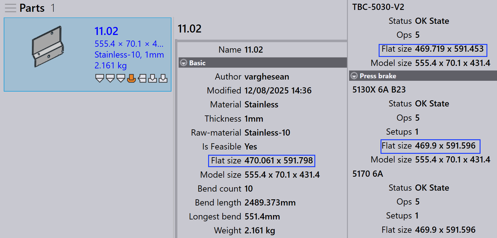

Pannello attrezzaggio
Questa sezione spiega le azioni relative all’attrezzaggio come Esporta output, Check Tooling, Disattiva attrezzaggio, Impostazione come Base Flat in corso…, Copia attrezzaggio in corso… e altre opzioni utilizzate per gestire le istanze di attrezzaggio.

|
|


Esporta output
Questa opzione esporta l’output del pezzo nella destinazione configurata in Impostazioni di default. (Vedere Bend Settings e Cut Settings)

Vengono esportati solo gli attrezzaggi associati all’operazione di attrezzaggio selezionata, non l’intero pezzo.
| I file esportati dipendono dal tipo di operazione. Per le operazioni di piegatura e pannellatura, vengono generati file NC e report. Per le operazioni di taglio e punzonatura, vengono esportati solo i file dei pezzi. |
Check Tooling
-
Se c’è una modifica nelle impostazioni CAM o un utensile di piegatura viene perso, non è necessario riattrezzare il pezzo.
-
Utilizzare invece Controlla attrezzaggio per convalidare l’attrezzaggio esistente senza apportare modifiche.
-
Se la convalida non riesce, lo stato dell’attrezzaggio di quell’istanza viene aggiornato e i file di output correlati vengono rimossi.
-
Controlla attrezzaggio rileva anche i pezzi in cui gli errori sono stati precedentemente ignorati manualmente utilizzando Ignora errori e aggiorna il loro stato a errore se necessario.

Copia attrezzaggio in corso…
La copia dell’attrezzaggio consente di applicare rapidamente l’attrezzaggio di piegatura da una soluzione ad altre, risparmiando tempo e fatica.
Questo copia la configurazione del punzone, sequenza e riscontro posteriore da un attrezzaggio di riferimento selezionato (soluzione) e tenta di applicare le stesse impostazioni a tutte le altre soluzioni.
-
Se la configurazione copiata è fattibile per una macchina di destinazione, viene salvata e utilizzata.
-
Se la configurazione non è fattibile, l’attrezzaggio originale per quella macchina rimane invariato.
Ad esempio, è possibile avere attrezzaggi diversi per macchine diverse:
-
Qui, la macchina 5230SX 6A utilizza un punzone a collo d’oca, la macchina 5085X 6A B23 utilizza un punzone appuntito.

Quando si utilizza Copia attrezzaggio in corso… sulla macchina 5230SX 6A, si tenta di copiare la configurazione del collo d’oca su tutte le altre macchine.

Le stesse impostazioni di punzone, sequenza e riscontro posteriore vengono applicate ovunque possibile. Se la configurazione copiata non può essere utilizzata, l’attrezzaggio originale rimane invariato.

Dopo aver applicato la copia dell’attrezzaggio, la configurazione del collo d’oca è stata applicata con successo a tutte le altre macchine dove è fattibile.
Impostazione come Base Flat in corso…
La funzione Impostazione come Base Flat in corso… definisce quale attrezzaggio di piegatura o pannellatura viene utilizzato come dimensione piatta di riferimento per la generazione di soluzioni di taglio. When a tooling is marked as Base-Flat, TruSmartCAM updates the part’s flat size based on that machine and regenerates cutting solutions accordingly. Base-Flat toolings are shown with a blue border in the UI.
Different bend machines may produce slight variations in flat size for the same part. When you set a tooling as the Base-Flat, TruSmartCAM uses that machine’s flat size as the master reference and automatically recalculates the cutting solutions.
Here, we can see different flat sizes for the same part across various machines:

In this example, the 5130X 6A B23 tooling is set as the Base-Flat, and the updated flat size is applied in the part properties:

Automatic base flat selection
When the factory setting Applicare la correzione piatta durante la piegatura is enabled:

-
TruSmartCAM automatically sets the bend tooling (that contains the max bend length table) as the Base-Flat during part import.
-
If the selected bend tooling encounters an error or is not feasible, TruSmartCAM intelligently switches and sets another valid bend tooling as the Base-Flat. This ensures the flat size reference and cutting solutions always remain consistent and valid without manual intervention.
Enhanced base flat management
TruSmartCAM provides Base-Flat options in the Salva in Praxis dialog when saving bend or fold tooling edits. These options appear only for toolings in the OK state and ensure that flat size and cutting solutions stay accurate.
Imposta come Base Flat e calcola il programma di taglio
This option is used to mark a tooling as Base-Flat for the first time and automatically generate the corresponding cutting solution.
Appears when:
-
The tooling is not currently marked as Base-Flat.
-
The user has checked out the tooling for editing and is saving the changes.

To use this option, check out the bend or fold tooling and make the required modifications, such as changes to bend parameters or flat size. Press Ctrl+S to save the changes. In the Salva in Praxis dialog, choose Imposta come Base Flat e calcola il programma di taglio and click OK. TruSmartCAM will set the tooling as the Base-Flat and generate the cutting solution using the updated flat size.
Aggiorna la Base Flat e ricalcola il programma di taglio
This option is used when the tooling is already marked as Base-Flat and has been edited, requiring the flat size and cutting solutions to be regenerated.
Appears when:
-
The tooling is already marked as Base-Flat.
-
The user has checked it out, edited it, and is saving the changes.

When editing the existing Base-Flat tooling, update the bend parameters or flat-size geometry as needed. In the Salva in Praxis dialog, choose Aggiorna la Base Flat e ricalcola il programma di taglio. TruSmartCAM will then update the Base-Flat tooling and regenerate all related cutting solutions to reflect the latest changes.
|
Only one bend tooling can be set as the Base-Flat at a time. When the Base-Flat is changed, existing cutting solutions are automatically reprocessed. This feature is available for both bend and fold toolings within TruSmartCAM. |
Ri-attrezzaggio…
This option reprocesses the selected tooling for the part.
Right-click the required tooling in the Tooling panel and click Ri-attrezzaggio…

A confirmation dialog is displayed before proceeding.

Click Sì to continue with re-tooling, or No to cancel the operation.
Only the selected tooling is re-tooled. Other toolings associated with the part are not affected. The existing outputs related to the selected tooling are removed and regenerated during the re-tooling process.
Use this option when tooling data is outdated, incorrect, or when changes are made to machine or tooling configurations.
Ignora errori
-
If a tooled instance shows a warning, and you still want to proceed with it, you can override the warning by clicking Ignora errori.

-
This will allow the system to export output files for that instance, even if there were tooling issues.
| Use Ignore Errors only when you are sure the warning can be safely ignored. Overriding actual errors may lead to machine damage or safety risks. |
Suppress/Unsuppress tooling
-
When a machine is inactive or you do not want a specific part to be processed by a particular machine, use Disattiva attrezzaggio to exclude that part from nesting on that machine.

-
After suppressing, hovering the mouse over the tooled instance shows a message like: “Tooling suppressed by <User name> on <Date Time>”.
-
Suppress tooling removes the output file for that machine and part.
-
Use Riattiva attrezzaggio to restore the tooling status for the part on that machine.

-
When unsuppressed, the respective output file is generated again.